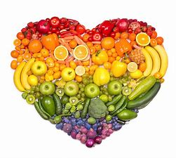
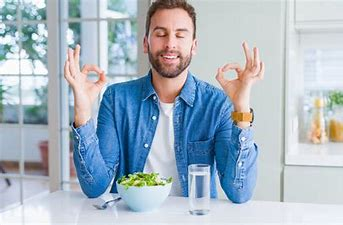

.jpg)
.jpg)


.jpg)
Kies in je dagelijkse voeding bewust voor gezonde producten:
Gezonde voeding
Gezonde voeding is de basis voor gezondheid. Een gezonde voeding kenmerkt zich door hoeveelheid en variatie. De schijf van Vijf gaat uit van vijf ‘spelregels’ en vijf groepen met voedingsproducten. Eigenlijk weet iedereen dat gezond eten belangrijk is. Gezonde voeding zorgt ervoor dat het lichaam goed functioneert. Men voelt zich over het algemeen stukken fitter door gezond te eten. Gezonde voeding helpt mee om de kans op aandoeningen als hart- en vaatziekten te verkleinen.
Gezonde voeding heeft twee belangrijke elementen die ervoor zorgen dat het lichaam goed kan functioneren. Dit zijn de macro- en de micronutriënten. Deze twee voedingsstoffengroepen zorgen voor bouwstoffen en energie. Zonder kan er simpelweg niet geleefd worden. Bouwstoffen zijn nodig om weefsels op te bouwen, te onderhouden en te repareren. Daarnaast zijn bouwstoffen ook nodig voor de organen, het zenuwstelsel, hormonen, enzymen en het bloed. Weefsels zijn groepen cellen die gezamenlijk dezelfde functie hebben. Deze zorgen onder andere voor een aantal basisfuncties in het lichaam als ademen, zien, denken en proeven. Het lichaam kan voedingsstoffen niet, of in onvoldoende mate, zelf maken en daarom worden ze wel essentiële (onmisbare) voedingsstoffen genoemd. Dat geldt bijvoorbeeld voor vitamine D. Macro- en micronutriënten worden onderverdeeld in verschillende soorten voedingsstoffen.
Iedereen wil er graag goed uit zien. De eerste stappen beginnen bij jezelf. Hoe is je eetgedrag, beweeg je genoeg op een dag en heb je voldoende structuur. Echter heb je het niet altijd voor het kiezen. Daarvoor zijn er bedrijven die gespecialiseerd zijn in het bewerken van je uiterlijk. Zij kunnen ervoor zorgen dat je je zelfverzekerder voelt door bijvoorbeeld net dat ene plekje weg te halen of andere knelpunten die belemmeren in het dagelijks leven.
Contact
Email: rocvanflevoland@gmail.com
Telefoon nummer: 0658251726